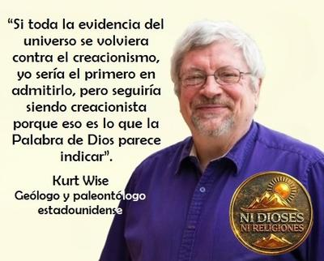

El extraordinario caso de Kurt Wise
Todo pensador crítico y estudioso del comportamiento humano llega a la conclusión de que nuestra mente es una obra fascinante de la evolución biológica. Pero si profundizamos en el tema, nos damos cuenta de que es también muy capaz de sabotearse a sí misma.


Los psiquiatras ven en su consulta diaria, cómo personas inteligentes, funcionales y educadas, pueden aferrarse con uñas, dientes y versículos subrayados, a creencias que no sólo carecen de evidencia, sino que la contradicen de forma frontal. Y surge aquí la pregunta incómoda: ¿Tiene algún sentido razonar con quien ha renunciado a la razón?
Desde la psicología y la psiquiatría se conocen bien fenómenos como la disonancia cognitiva, el sesgo de confirmación y el razonamiento motivado. No se trata de patologías en sí mismas, sino de atajos mentales que todos solemos usar. Pero el problema comienza cuando estos mecanismos dejan de ser defensas ocasionales, para convertirse en trincheras permanentes.
Porque en el creyente obcecado un dogma no es una hipótesis revisable, sino una identidad que adopta en forma permanente. Y cuestionarlo, no es para él un ejercicio intelectual, sino un ataque personal, un ataque existencial. En ese punto la evidencia deja de funcionar como evidencia, y pasa a ser reinterpretada, minimizada o directamente ignorada. La razón ya no es árbitro, sino enemigo.
Y es aquí donde resulta tan pertinente la frase del ilusionista escéptico canadiense-estadounidense James Randi (1928-2020):
«Aquellos que creen sin razón no pueden ser convencidos por la razón.»
Esto no es cinismo: es una descripción clínica bastante precisa.
Pero volvamos a plantear la pregunta: ¿Vale la pena discutir con quien no quiere razonar? Bueno, desde un punto de vista psiquiátrico discutir no siempre es tratar de convencer. Porque cuando una creencia es impermeable a la evidencia, el debate racional suele servir más para reforzar la convicción que para debilitarla. Cada refutación se vive como una persecución; cada dato, como una prueba de que «el mundo está en contra de la verdad revelada».
Y en esos casos, el diálogo racional sólo tiene sentido para los observadores, no para el creyente obcecado. Sirve más bien para demostrar cómo funciona la razón, no para convencer a quien ya decidió que no la necesita. Y encontramos en el mundo académico un ejemplo paradigmático —además de profundamente trágico— de esta dinámica. Un triste caso en que la ciencia terminó arrodillada ante un antiguo libro de mitos del Oriente Medio. Nos referimos al geólogo y paleontólogo estadounidense Kurt Patrick Wise (n. en 1959), quien es, desde el punto de vista clínico e intelectual, un manual viviente de disonancia cognitiva elevada a virtud moral.
Wise posee una licenciatura en geología por la Universidad de Chicago, y un doctorado en paleontología por Harvard. Pero a pesar de esto, es un creacionista de la Tierra joven, convencido de que el planeta tiene menos de diez mil años de antigüedad. Y no porque la evidencia así lo indique, sino, a pesar de que toda la evidencia lo contradiga.
Su declaración más famosa es demoledora por su honestidad:
«soy un creacionista joven porque esa es mi comprensión de las Escrituras […], si toda la evidencia del universo se vuelve en contra del creacionismo, yo sería el primero en admitirlo, pero seguiría siendo un creacionista porque así parece indicar la Palabra de Dios.»[1]
Pero Wise no se conformó con vivir en el engaño él solo, sino que decidió actuar como un creacionista militante, enseñando entre 2006 y 2009 en el Seminario Teológico Bautista del Sur, como Director del Centro de Teología y Ciencias de la escuela, y anteriormente, enseñado en el Bryan College de Dayton, Tennessee, donde se desempeñó como Director del Centro de Investigación de Orígenes, y como Profesor Asociado de Ciencias durante diecisiete años.
Incluso Wise llegó a ejercer como consultor del «Museo de la Creación de Respuestas en el Génesis» (Answers in Genesis Creation Museum)[1], un proyecto del cristiano fundamentalista australiano Ken Ham, inaugurado en 2007 en Petersburg, Kentucky. Ham se hizo famoso por la construcción del parque temático Ark Encounter, en Grant County, Kentucky, cuyo atractivo principal es una supuesta réplica del Arca de Noé.
En fin, lo que le pasa a Wise no es ignorancia: es renuncia explícita al pensamiento crítico. Es declarar, sin rubor, que ninguna cantidad de hechos podrá jamás modificar una creencia previa. La realidad queda así subordinada a la interpretación literal de un texto antiguo surgido de una religión tribal del Oriente Medio. Pero lo más inquietante no es que Wise crea eso, sino que además lo enseña.
Cualquier psiquiatra no puede evitar preguntarse: ¿Qué mensaje recibe un estudiante cuando su profesor le dice que la evidencia no importa? —y la respuesta es clara: aprende que pensar es opcional, siempre que se crea con suficiente fervor.
En el extremo opuesto encontramos al biólogo evolutivo británico Richard Dawkins (n. en 1941), quien ha expresado una postura radicalmente distinta y científicamente sana:
«Si toda la evidencia del universo se volviera a favor del creacionismo, yo sería el primero en admitirlo, e inmediatamente cambiaría de opinión. Tal como están las cosas, sin embargo, toda la evidencia disponible (y hay una gran cantidad de ella) favorece la evolución.»[2]
Aquí está la diferencia fundamental entre ciencia y dogma: la ciencia puede cambiar de idea; mientras la fe dogmática se jacta de no hacerlo. Sobre la postura de Wise, Dawkins fue brutalmente honesto cuando dijo:
«Esto me deja, como científico, sin palabras… Tenemos la autoridad de un hombre que bien puede ser el científico más altamente calificado y más inteligente del creacionismo, a quien ninguna evidencia, no importa cuán abrumadora, no importa cuán abarcadora, no importa cuán devastadoramente convincente sea, nunca puede marcar la diferencia.»[1]
Y en su libro «The God Delusion» (El espejismo de Dios), Dawkins cita estas otras palabras de Wise:
«Traté como pude, y aun con el beneficio de los intactos márgenes de las páginas de las Escrituras, hallé imposible tomar la Biblia sin que se desgarrase en dos. Tenía que tomar una decisión entre la evolución y las Escrituras. O las Escrituras eran ciertas y la evolución estaba equivocada, o la evolución era cierta y debía botar la Biblia… Fue allí, esa noche, en la que acepté la Palabra de Dios y rechacé todo lo que la contradijese, incluyendo la evolución. Con eso, con profundo dolor, eché al fuego todos mis sueños y esperanzas sobre la ciencia.»[3]
Sobre estas palabras comenta Dawkins en su mismo libro:
«el relato de Kurt Wise es simplemente triste, patético y condenable. La herida, para su carrera y la felicidad de su vida, fue autoinfligida, tan innecesaria, tan fácil de evitar. Todo lo que él tenía que hacer era tirar la Biblia. O interpretarla simbólicamente, o alegóricamente, como lo hacen los teólogos. En vez de eso, hizo lo que hacen los fundamentalistas, y desechó la ciencia, la evidencia y la razón, junto con todos sus sueños y esperanzas.»
Pero agrega:
«Quizás único entre los fundamentalistas, Kurt Wise es devastadoramente honesto, dolorosamente y asombrosamente honesto.»[3]
Es decir, para Dawkins el caso de Wise es triste y patético, y no por falta de inteligencia, sino por haber decidido Wise sacrificar la razón, la evidencia y sus propios sueños científicos en el altar de la literalidad bíblica. Y, sin embargo, reconoce algo inquietante: Wise es devastadoramente honesto. No finge respetar la evidencia; la descarta abiertamente.
En conclusión, ¿qué hacer cuando razonar con alguien deja de ser posible? —Desde una perspectiva psiquiátrica no todo lo que es irracional es una enfermedad, pero sí todo dogmatismo absoluto es una forma de empobrecimiento mental. Y cuando alguien afirma que ninguna evidencia imaginable podría hacerlo cambiar de opinión, estamos ante una mente cerrada por decisión propia. ¿Tiene entonces algún sentido razonar con quien ha renunciado a la razón? —No, no para convencerlo. Sí, para dejar constancia de que la razón sigue existiendo. Y quizás esa sea nuestra tarea como ateos, o científicos, y como defensores del pensamiento crítico: no rescatar a quien no quiere ser rescatado, sino evitar que su ejemplo arrastre a otros al mismo naufragio intelectual.
Porque, creer contra la evidencia no es fe admirable. Es, simple y llanamente, orgullo cognitivo con disfraz religioso.
[Godless Freeman]
Comentarios
Comments powered by Disqus